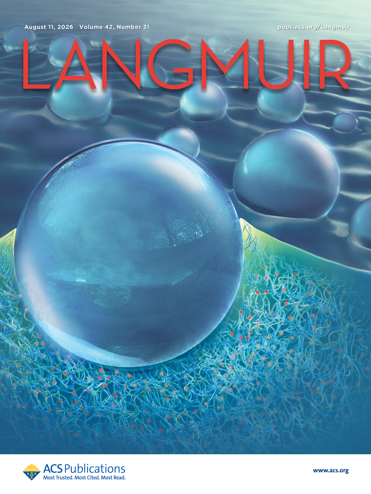

Journal cover期刊封面First author第一作者
The role of extracted free chains in adhesion on soft gel surfaces可提取自由链在软凝胶表面黏附中的作用
Langmuir 42(31), 22623–22629 (2026)
Research output研究成果
Journal articles, conference papers, patents, and presentations. Labels identify first or co-first authorship.这里集中展示期刊论文、会议论文、专利与会议报告。页面只强调第一作者或共同第一作者。 Google Scholar ↗

Journal cover期刊封面First author第一作者
Langmuir 42(31), 22623–22629 (2026)

Co-first author共同第一作者
Physics of Fluids 37, 042108 (2025)

First author第一作者
Physical Review Research 6, 033210 (2024)

First author第一作者
Polymer Testing 93, 106896 (2021)

First author第一作者
Optics and Lasers in Engineering 124, 105804 (2020)

Nanotechnology Reviews 9(1), 28–40 (2020)
First author第一作者
Sixth International Conference on Optical and Photonic Engineering, SPIE 10827, 28–34 (2018)
Sixth International Conference on Optical and Photonic Engineering, SPIE 10827, 7–12 (2018)
Wenjie Qian, Jinchang Chen, Wei Qiu, Yang Gao · Chinese invention patent · Under review (2026)钱文杰、陈金昶、邱伟、高阳 · 中国发明专利 · 审查中（2026）
Wenjie Qian, Zitao Ni, Wei Qiu · Chinese invention patent · Under review (2026)钱文杰、倪子涛、邱伟 · 中国发明专利 · 审查中（2026）
Yang Gao, Wei Qiu, Wei Qiu, Wenjie Qian · Chinese invention patent · Under review (2026)高阳、邱伟、邱伟、钱文杰 · 中国发明专利 · 审查中（2026）
Zitao Ni, Wenjie Qian, Houyong Xia · Chinese invention patent · Under review (2026)倪子涛、钱文杰、夏厚勇 · 中国发明专利 · 审查中（2026）
Jianguo Zhu, Wenjie Qian, Huiying Zhang, Jian Li · Chinese invention patent中国发明专利 ZL 2019 1 0800502.5
Jianguo Zhu, Wenjie Qian, Huiying Zhang, Jian Li · Chinese invention patent中国发明专利 ZL 2019 1 0805036.X
APS Global Physics Summit 2025, Anaheim — “Emergence and growth dynamics of wetting-induced phase separation on soft solids.”“软固体表面润湿诱导相分离的产生与生长动力学”。
Society of Engineering Science 2024 Annual Technical Meeting, Hangzhou — same research topic.同主题研究报告。
International Symposium on Soft Matter Science and Engineering, Guangzhou — same research topic.同主题研究报告。
Soft Matter Day Workshop, HKUST — “Investigation of wetting induced phase separation on soft surfaces.”“软表面润湿诱导相分离研究”。
16th National Congress of Experimental Mechanics第十六届全国实验力学大会, Jiaxing — strength of epoxy films.环氧薄膜强度研究。
Jiangsu Provincial Congress of Mechanics江苏省力学大会, Nanjing — distortion correction for an ultra-depth microscope.超景深显微镜畸变校正。
15th National Congress of Experimental Mechanics第十五届全国实验力学大会, Huludao — residual-stress measurement by indentation.基于压痕的残余应力测量。
6th International Conference on Optical and Photonic Engineering, Shanghai — lens-distortion correction for micro-scale DIC.微尺度 DIC 的镜头畸变校正。